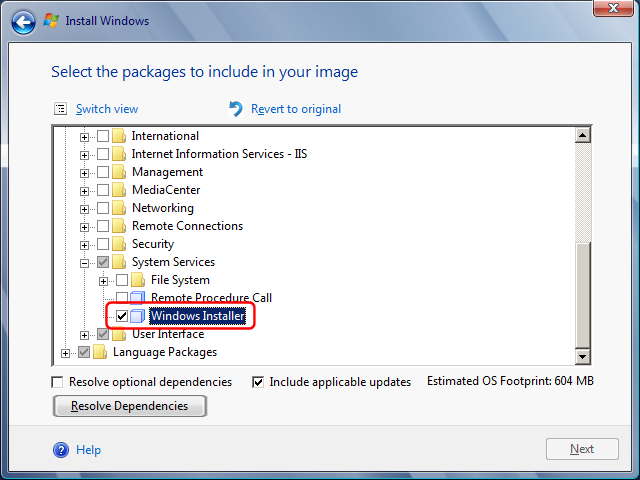
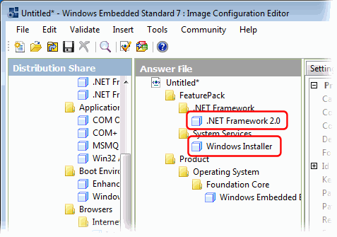

---
title: Simple DNS Plus on Windows Embedded Standard 7
category: 11
frontpage: false
comments: true
created-utc: 2019-01-01
modified-utc: 2019-01-01
---
Windows Embedded Standard 7 is a specialized version of Windows 7 for device manufacturers, allowing them to optimize the Windows installation by only including Windows components needed for their particular device.
You can install Simple DNS Plus (v. 5.2 and later) on Windows Embedded Standard 7 just like you do on a regular Windows 7 computer.
The only requirement is that the packages ".NET Framework 2.0" and "System Services / Windows Installer" (and their dependencies) are included in the Windows image.
If you are installing Windows from the runtime CD, include these two packages:


If you are creating a custom image using the "Image Configuration Editor", you need to include the same two packages:

Note: Simple DNS Plus does NOT need the "Windows Explorer Shell", so if you are making a device without the Windows taskbar / Explorer, you can simply run the Simple DNS Plus setup file from the command line.